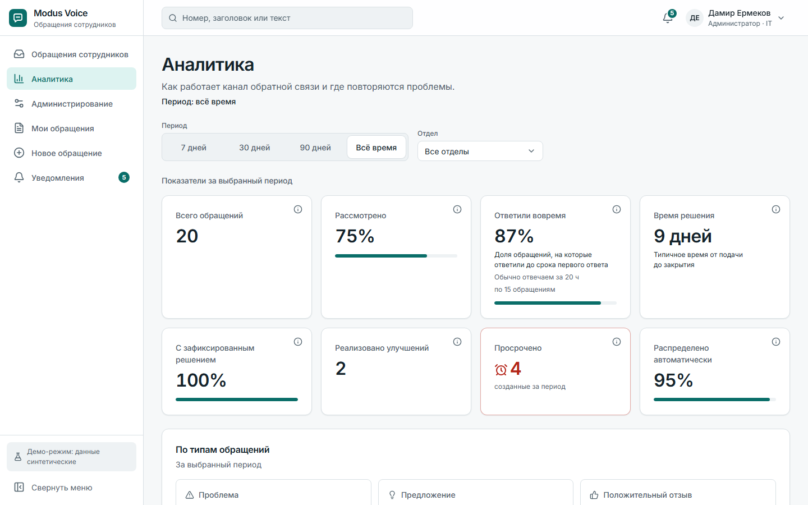

Идеи и проблемы сотрудников теряются в чатах
Нет владельца, нет срока, автор не узнаёт чем всё кончилось. Повторяющиеся проблемы никто не видит, и люди перестают сообщать.
Чаты и звонки
Договорились и забыли
Блокноты и почта
Историю не восстановить
«Это уже решили?»
Автор не знает статус
Одно место: сообщил за минуту, увидел результат
Маршрут и срок
Система сама находит владельца по категории и ставит срок ответа. Не нашла: очередь «не распределено».
Решение с итогом
Закрыть без результата нельзя. Автор видит статус, историю и итог.
Анонимность
Автора нет в базе данных. Доступ к обращению по токену, который показывается один раз.
Три стадии заказчика в одном потоке
Руководители других отделов видят все обращения, но пишут только комментарий и заметку. Аналитика показывает четыре метрики из ТЗ и повторяющиеся проблемы.
- Сотрудник подаёт анонимное обращение и получает токен
- Руководитель видит «Автор (анонимно)», запрашивает уточнение
- Стадии, результат, автор видит итог по токену
- Аналитика: метрики ТЗ
Работающее ПО, а не макет
модулей на Go: identity, org, requests, insights, notifications, telegram
E2E-проверок: 27 на моках и 23 на реальном бэкенде
обращений и 18 категорий из датасета ТЗ, данные синтетические
метрики из ТЗ в аналитике
РеализованоТолько проработано: Битрикс24, 1С

Ядро не знает о внешних системах
Новый адаптер подключается без переписывания ядра. Цели, данные и вопросы к компании описаны в docs/INTEGRATIONS.md.
Пилот за 4 недели, дальше интеграции
MVP
Весь цикл обращения, роли, аналитика, Docker
Пилот
1–2 подразделения. Успех: 80% первых ответов в срок
Интеграции
Битрикс24, PostgreSQL, e-mail, эскалация
Расширение
1С, доска идей, PWA, опросы клиентов
От компании: пилотные подразделения и ответы на открытые вопросы: вход, анонимность, каналы уведомлений.